| 日付 | 2012年10月6日（土） |
|---|---|
| 山域 | 西上州 |
| メンバー | 家族（妻、長女・1歳） |
| 山行形態 | 子連れ日帰り |
| アクセス | 車 |
| ルート (Map) | 楢原登山口 (9:28) - (10:59) 湯ノ沢の頭 - (12:10) ヤツウチグラ (12:47) - (13:10) 諏訪山 - (13:38) ヤツウチグラ - (14:38) 湯ノ沢の頭 (14:55) - (15:53) 楢原登山口 |
西上州の奥地に諏訪山という寂峰がある。
決して目立つ山容ではないのだが、どこか人を引き付ける魅力がある山である。
久しぶりに静かな山を求め、3連休の初日に訪れてみることにする。
楢原登山口に到着。標高870m。
ここに至る林道は落石が多く車で走りにくい道だった。
登山口には何やら立派な建物が建っている。
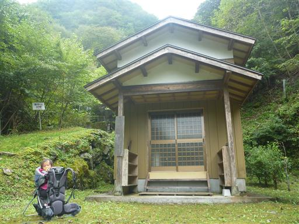
山頂までの距離がずいぶんと正確に書かれている。
山頂まで標高差はそれほどないのに距離はかなり長い。

歩き始めの道なのだが、草が禿げていない。
どう見ても人通りの少なそうな登山道だ。
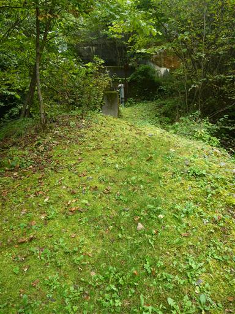
歩き始めてすぐに、目の前に美しい滝が現れる。
地図を見ても名前は記載されていないが二筋の立派な滝だ。
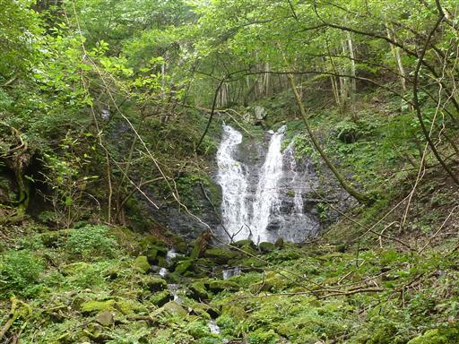
しばらくは沢沿いを歩くが、途中で沢と離れて斜面をジグザグに登っていく。
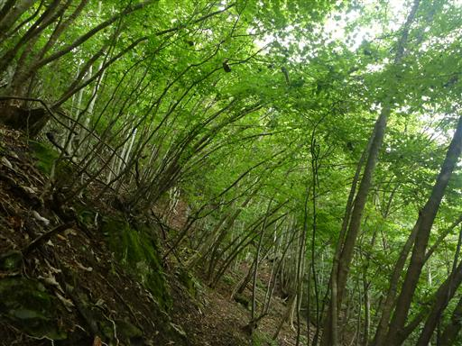
所々にこのような建物を見かける。この山は信仰の山なのだろう。
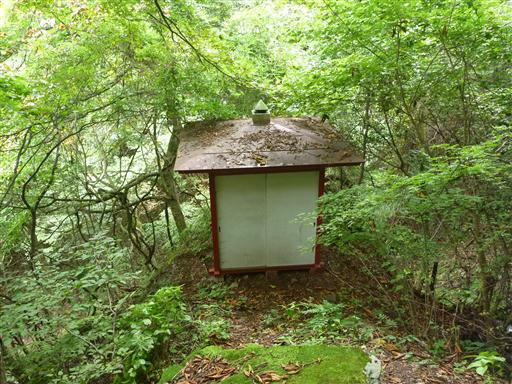
足元に転がる栗。栗の殻はよく見かけるが、中身が入っているとは珍しい。
子供のおもちゃ用にいくつかの栗とドングリを拾いながら歩く。
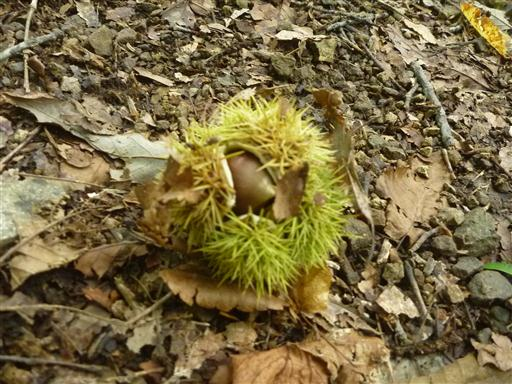
大江権現堂に到着。ここで諏訪山に続く尾根に到達する。
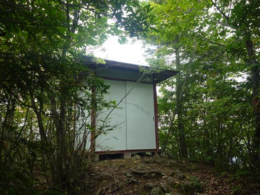
建物の中を少しのぞいてみる。
中では気持ち悪い虫が飛び跳ねている。カマドウマだろうか…
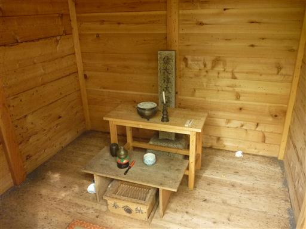
ここからの尾根は目立ったピークの無い平らな尾根なのだが
それでも尾根上のピークにはことごとく巻道が付いている。
そのトラバース道が細いので、何とも歩きにくい。
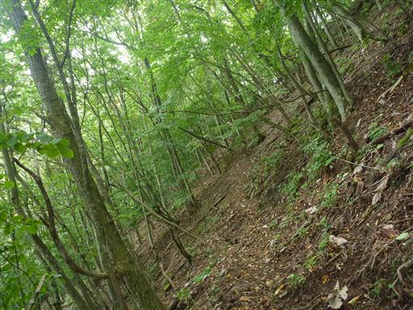
道端には所々に石灯篭などが置かれている。
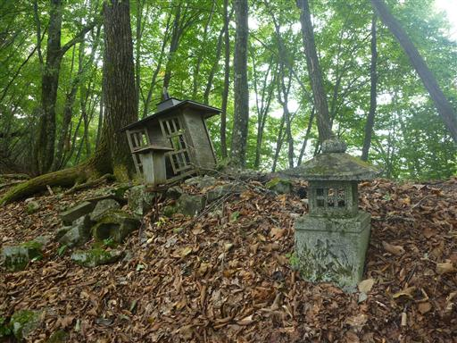
西上州の山らしく、巨大な岩が現れる。
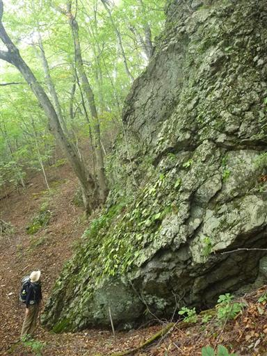
岩にしがみついて横向きに木が生えている。ずいぶんと根性のある木だ。

白い紐が巻かれているのは植林なのだろうか？
植林地帯が広がるわけではなく、なぜか広葉樹林帯の中にまばらに存在している。
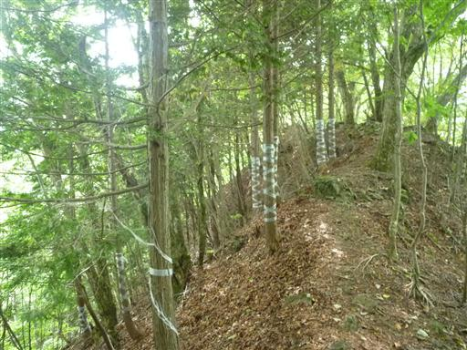
梯子を使って急斜面を下る。ここで本日初めて他の登山者と出会う。
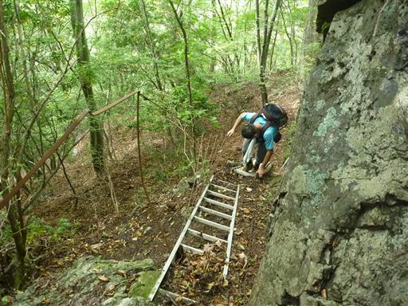
大岩がいくつもあって壮観な景色だ。
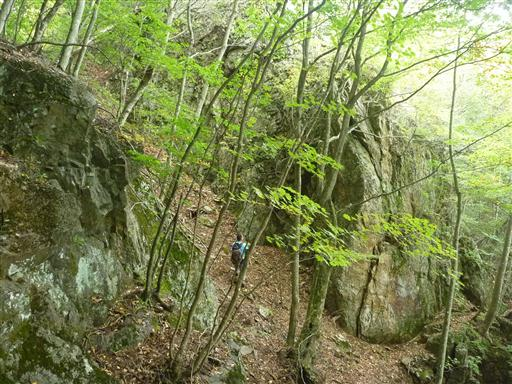
こちらも不思議な形をした木だ。横向きの幹から2本の枝が上に伸びている。

ビッシリとキノコに覆われた木。少し気持ち悪い。
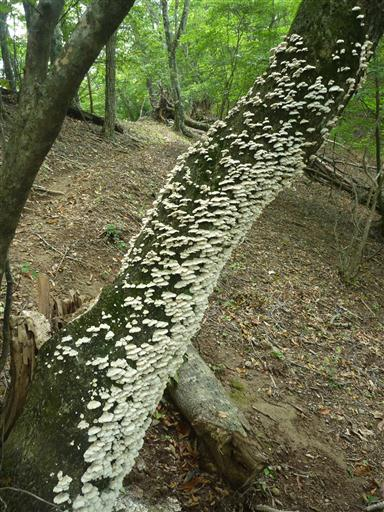
こちらのキノコも不気味なデザインだ。マラカスのような形をしている。
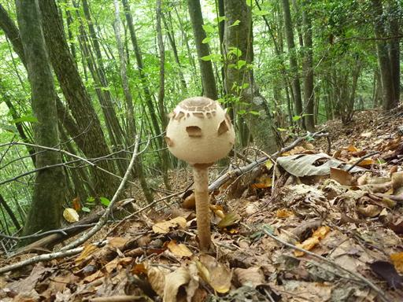
鮮やかなキノコ。でも毒々しい。
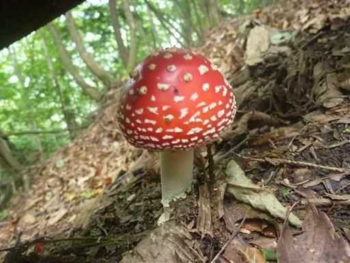
小屋に到着。地図に「床なく、狭く、宿泊は厳しい」と書かれているが
ドアもなければ天井も穴だらけで、ほとんど何の役にも立たない。
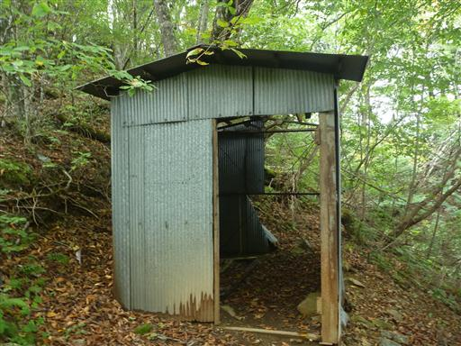
ここまでほぼ平坦な登山道だったが、ここから急傾斜が始まり一気に標高をかせぐ。
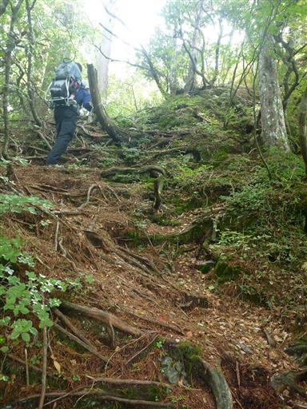
標高を上げていくと紅葉の始まっている木が出てくる。
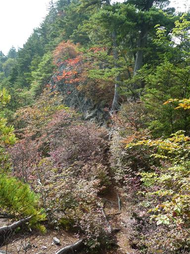
岩の隙間から生える小さな松。まるで盆栽みたいだ。
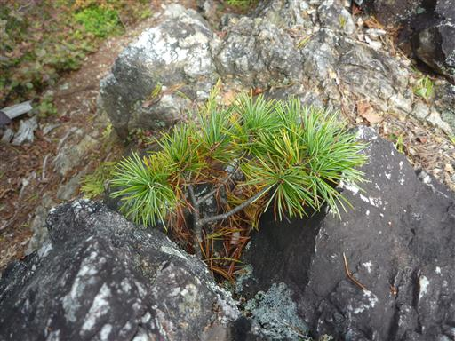
急斜面に付けられた梯子を登っていく。
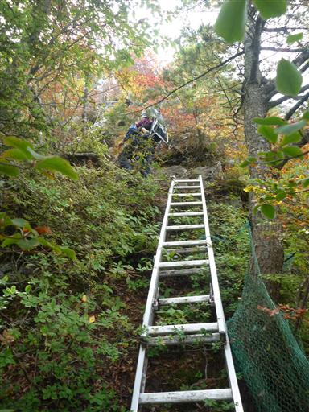
紅葉が美しい。決して鮮やかではないが、紅葉はまだだと思っていたため嬉しい誤算だ。
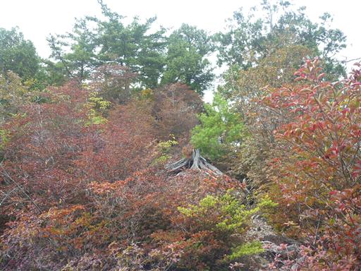
目の前にヤツウチグラの岩峰が現れる。周りを岩で囲まれた立派なピークだ。
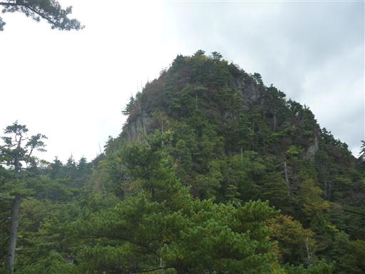
ヤツウチグラが見える場所に小さな祠が置かれている。
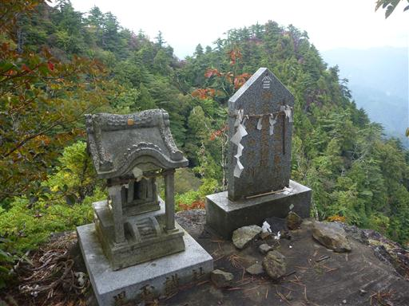
ヤツウチグラまで梯子を越え、岩を越え登っていく。
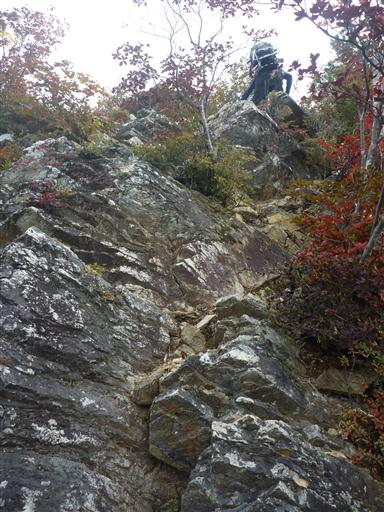
ヤツウチグラに到着。別名、三笠山。
12時を過ぎたので展望の良いこの場所で昼食をとることにする。
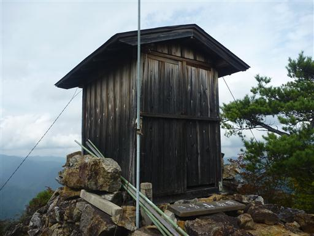
山頂から広がる大展望。しかし見えるピークはマイナーな山ばかりだ。
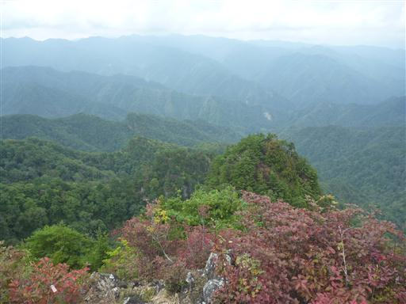
歩いて来た尾根。平らな尾根がずっと先まで続いている。
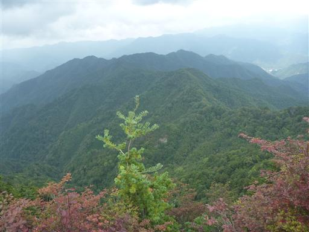
そしてすぐ近くに見えるのは諏訪山。
山頂にいた男性はここから下っての登り返しが辛そうだからと言ってここで引き返していった。
見た目には辛そうでも、地図を見るとそれほどでもないのだが…
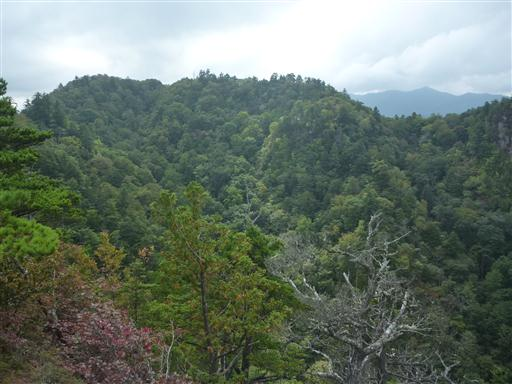
諏訪山へ続く道には一箇所岩場がある。
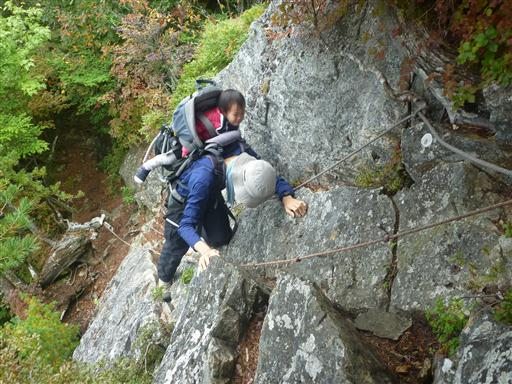
2本の木の間に祠が祀られている。
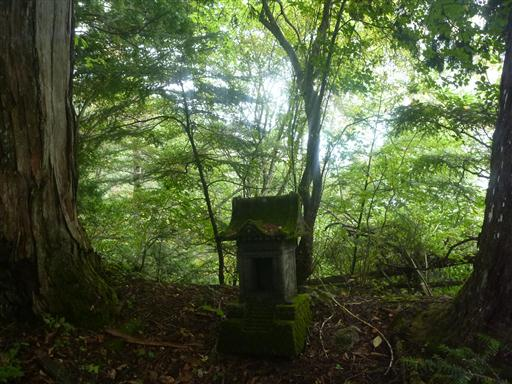
諏訪山山頂に到着。標高1549m。
樹林に囲まれた静かな静かな山頂だ。
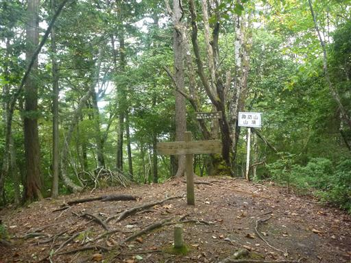
昼食はすでにとっているので、山頂では休憩せずにすぐに引き返す。
ヤツウチグラから先は急斜面の下りが続く。

いつの間にやら雲が下がってきて視界を遮ってしまう。
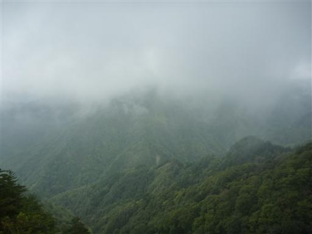
楢原コースと浜平コースの分岐点に到着。
ここの分岐点は分かりにくく、登りの時には気づかずに通り過ぎてしまった。
標識が6つもあるのに、ここが分岐点であることを示すものは1つもないとは、お粗末な限りだ。
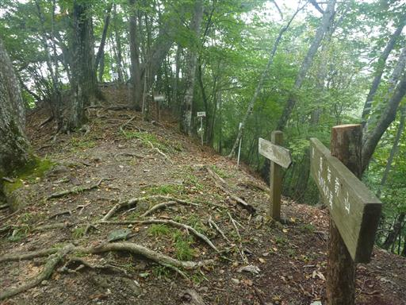
下山後は浜平温泉しおじの湯に寄って帰る。
悪くない施設だったが、山奥深くにあり、それもマイナーな山ばかりということもあって
客の数は少なかった。
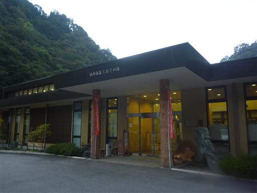
温泉施設での食事は17時がオーダーストップで間に合わなかったため、
そこで教えてもらった二萬石というレストランに立ち寄る。
地元ではなかなか有名なところのようだ。
今回は山中で出会った登山者が2人と静かな山行を楽しめた。
また、ヤツウチグラでの紅葉と展望はなかなか素晴らしかった。
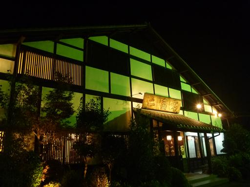